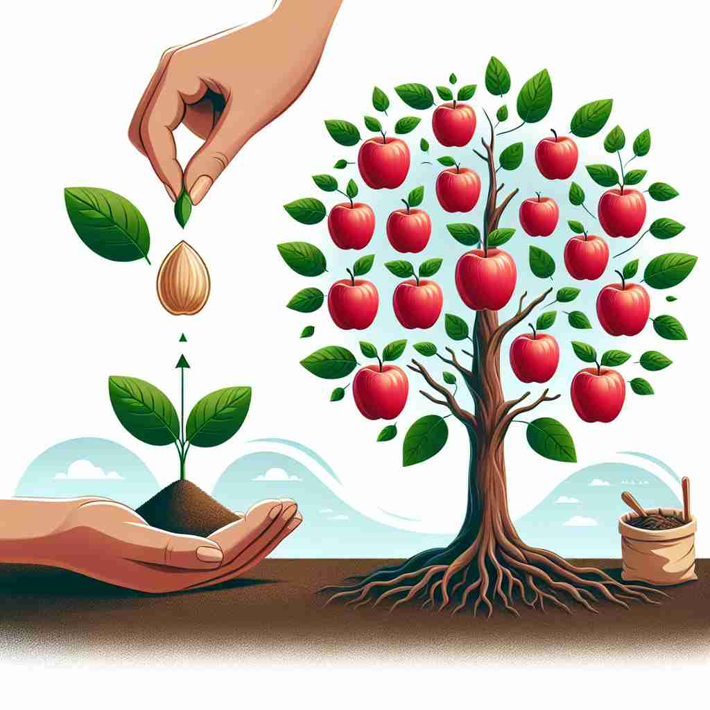

💬 The scientist is happy with the result of the experiment. 科学家对实验结果感到满意。

💬 She is happy about her test result. 她对她的考试成绩感到满意。
💬 The players are thrilled about the match result displayed on the scoreboard. 球员们对计分板上显示的比赛结果感到非常兴奋。

💬 An apple tree is a result from a seed planted in the soil. 苹果树是种子在土壤中播种的结果。
🧠 想象'result'是一条因果链的终点。无论是名词还是动词用法，都涉及某事物（原因）导致另一事物（结果）的出现。这个核心概念贯穿了'result'的各种用法，帮助你更容易理解和记忆它的多重含义。
🔈 [rɪ'zʌlt]
🗝️ n. something that happens or exists because of something else 由于某事而发生或存在的事情
🎭 在一个科学实验室里，研究人员将化学溶液A和B混合在一个烧杯中。经过几分钟的观察，他们发现液体变成了蓝色。这是实验的'result'，即因为某个原因而产生的结果。
💬 The experiment produced some unexpected results. 实验产生了一些意想不到的结果。
🌳 由词根 'sult'（跳跃、结果）加上前缀 're-'（再、回）构成，表示回到某一行为或事件后的结果。
🕸️ 1. consult: 咨询 2. insult: 侮辱 3. exult: 欢欣
💡 记忆 'result' 时，可以联想为 're-'（再）与 'sult'（跳跃）的组合，即再跳跃一次的结果。想象为某个行为之后的结果，帮助记住其意义。